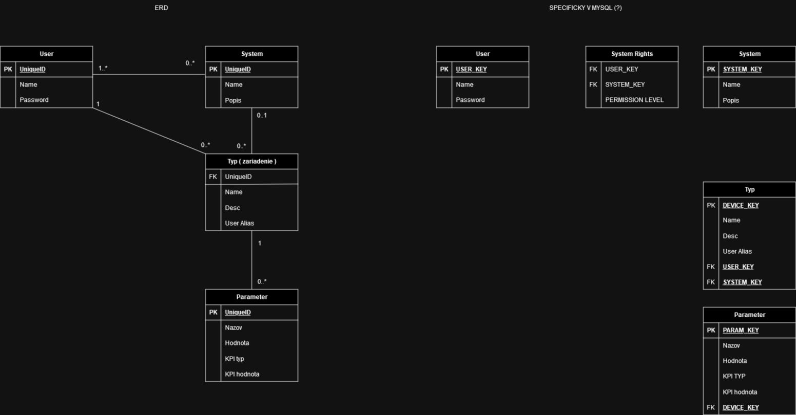

IoT: správa zařízení
- Autoři
- Matúš Dobiáš
xdobia15@stud.fit.vutbr.cz -
zariadenia; parametre; ERD; dokumentácia; deployment
- Richard Blažo
xblazo00@stud.fit.vutbr.cz -
Admin, Broker, User, sidebar, prihlasovanie,
- Oliver Nemček
xnemce08@stud.fit.vutbr.cz -
registracia; zmena hesla; pridavanie, uprava a mazanie systémov zariadení
- URL aplikace
- http://www.iis-xdobia15.com/
Uživatelé systému pro testování
Uveďte prosím existující zástupce všech rolí uživatelú.
| Login | Heslo | Role |
|---|
| lesnar17 | kolohousenka | Administrátor |
| broker | broker | broker |
| matej | matej | User |
| ronnie | ronnie | User |
Je možné si zaregistrovať nových uživateľov a z administrátorského účtu si priradiť práva
(Diagram případů užití není nutné vkládat, pokud IS implementuje role a případy užití definované zadáním.)
Video
Přiložte odkaz na komentované video demostrující použití informačního systému. Zaměřte se na případy užití definované zadáním (např. registrace uživatele, správa uživatelů a činnosti jednotlivých rolí). Video nahrajte například na VUT Google Drive, kde ho bude možné přímo spustit z odkazu.
Implementace
Stručná dokumentace k implementaci, která popisuje, které části projektu (např. PHP skripty) implementují jednotlivé případy použití.
Databáze

Instalace
Stručně popište: - TODO
- postup instalace na server:
- softwarové požadavky: Python3,
- Python modules: Django 3.2, pymysql
- Adresárová štruktúra:
IoT/
├── IoT/
│ ├── __init__.py
│ ├── asgi.py
│ ├── settings.py
│ ├── urls.py
│ └── wsgi.py
├──main/
│ ├── management/
│ │ └── commands/
│ │ └── seed.py
│ ├── migrations/ -- vygenerovane pomocou makemigrations, migrate
│ ├── templates/ -- html templates
│ ├── templatetags/ -- custom template tags
│ ├── __init__.py
│ ├── admin.py
│ ├── apps.py
│ ├── models.py
│ ├── tests.py
│ ├── urls.py
│ └── views.py
└── manage.py
- Po stiahnutí projektu, inštalácií modulov a replikácií adresárovej štruktúri je potrebné vytvoriť migrácie a naseedovať databázu.
V IoT/ - python3 manage.py makemigrations, python3 manage.py migrate, python3 manage.py seed
- Po úspešnej inštalácií je možné spustiť server pomocou python3 manage.py runserver
Známé problémy
Naša databáza je na nejakom free trial učte na nejakom cloude.
V prípade, že zrazu bude nedostupná, treba v IoT/IoT/settings.py zmeniť databázu na inú mysql databázu,
vytvoriť migrácie ( v IoT/ - python3 manage.py makemigrations, python3 manage.py migrate) a
naseedovať databázu ( v IoT/ - python3 manage.py seed ).